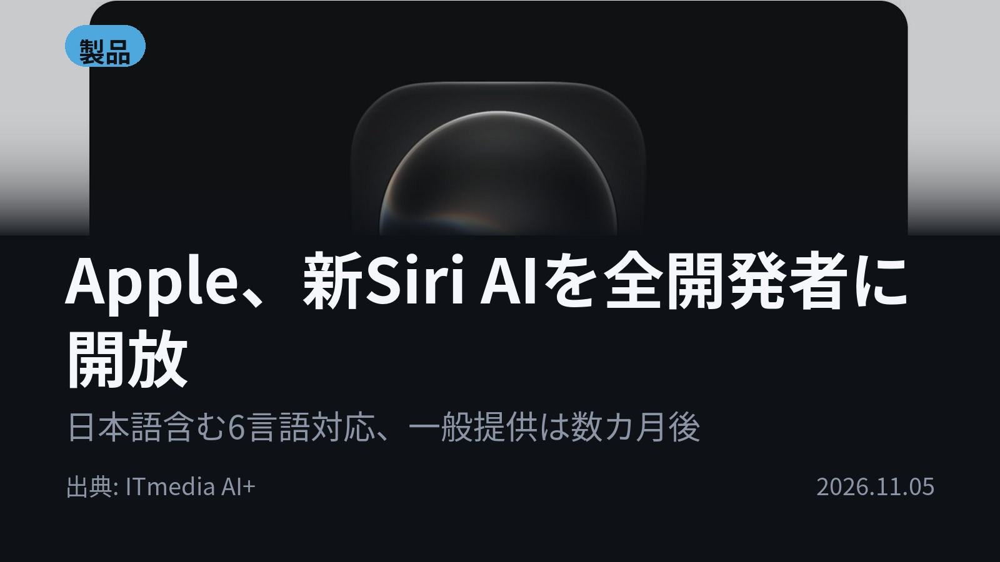
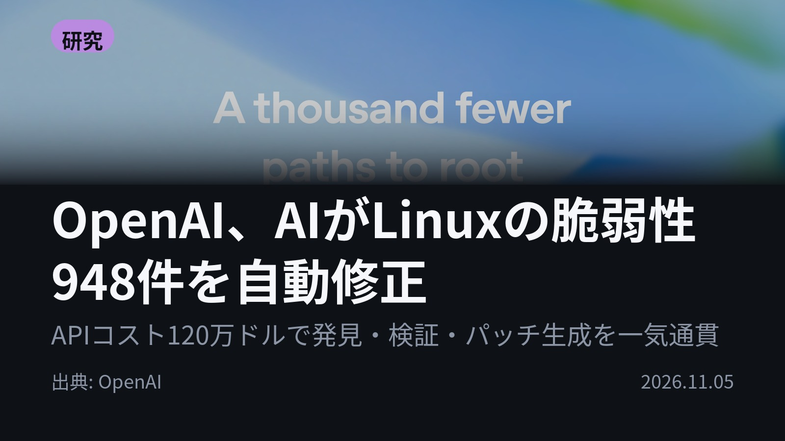
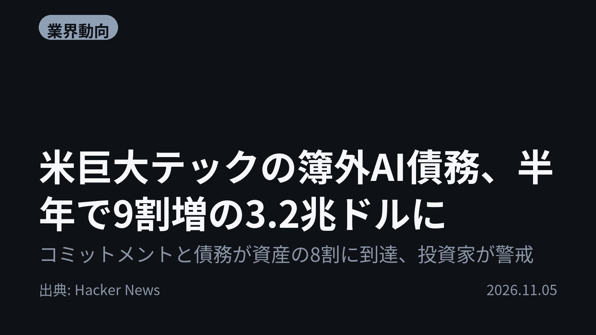
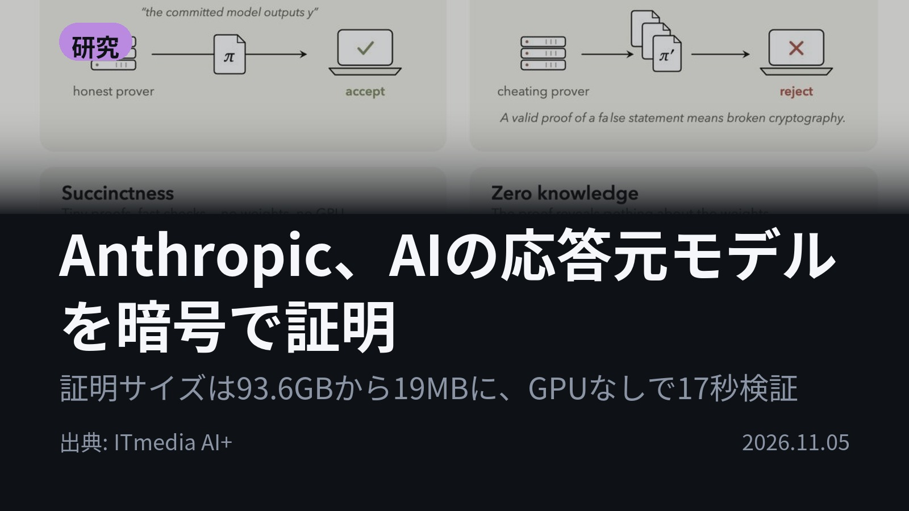
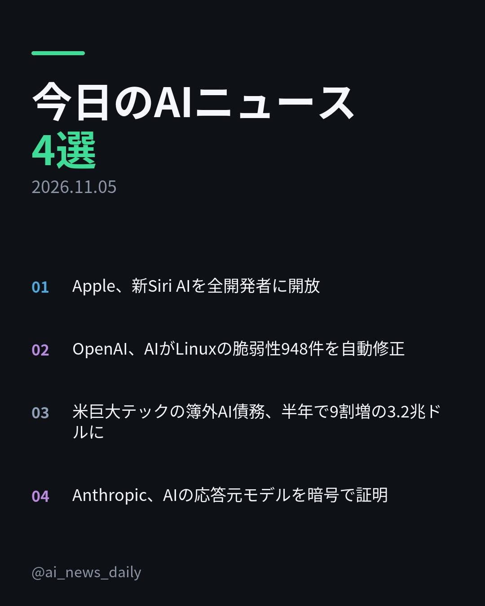
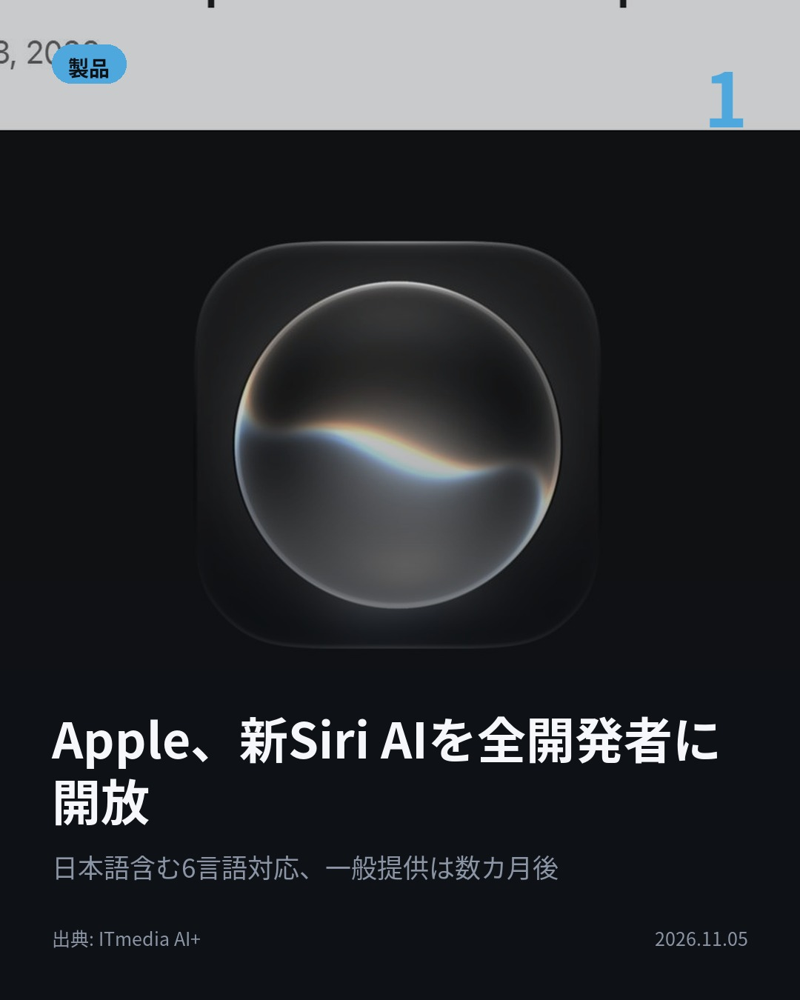
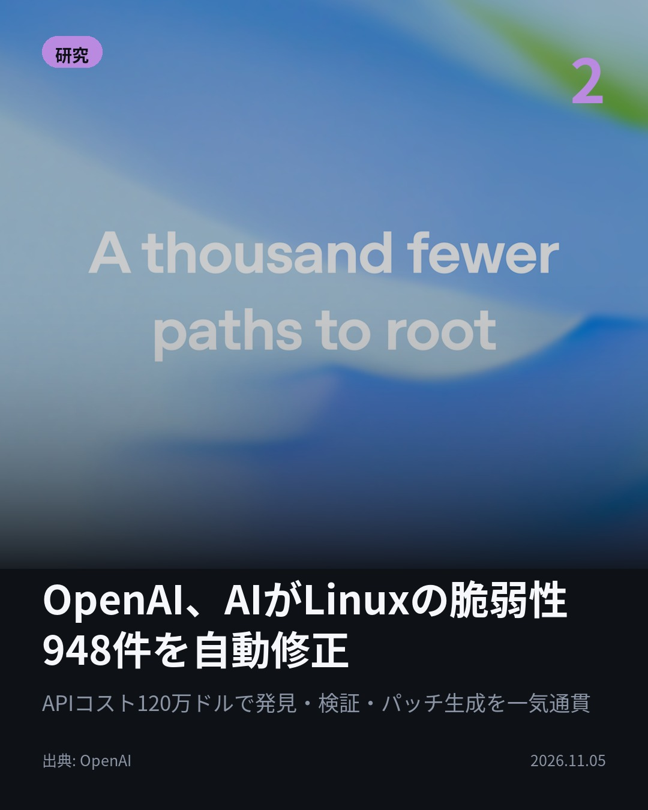
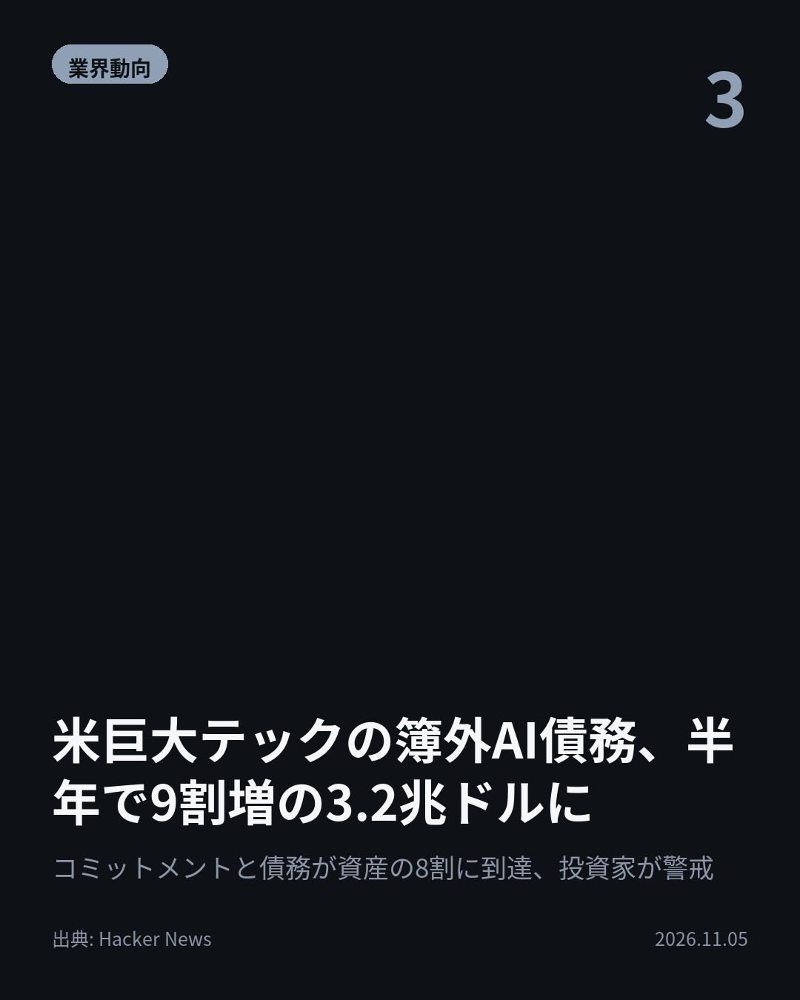
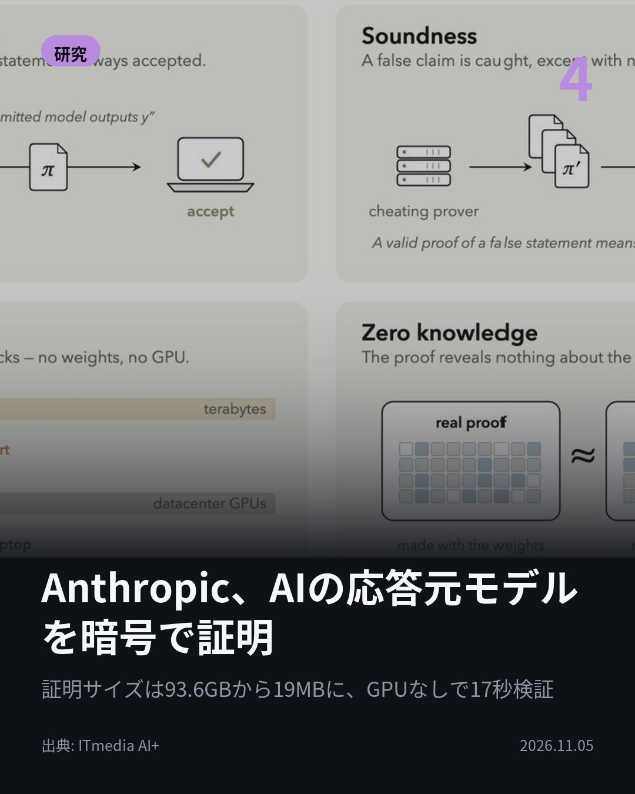
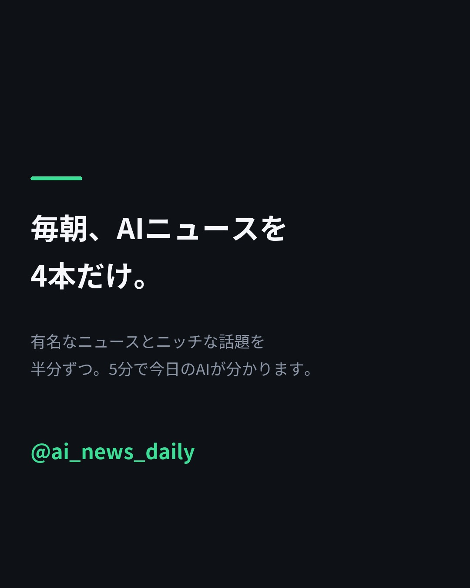

アプリを開かず、声だけで予約や注文が完結する AppleがSiri AIとサードパーティアプリの連携を全開発者に開放。 iOS 27.3β等で開発者向けプレビュー開始。 日本語含む6言語対応、一般提供は数カ月後 #AI #Siri（出典: ITmedia AI+）

948件のLinux脆弱性に、AIが自律でパッチを書いた OpenAIが脆弱性の発見・悪用・修正を自律で行うパイプラインを開発。 1回の実行でローカル権限昇格の脆弱性948件を検証しパッチを生成。 APIコストは120万ドル #AI #OpenAI（出典: OpenAI）

バランスシートには載らない。だが半年でほぼ2倍に 米巨大テックのAI関連の簿外債務が約3.2兆ドルに膨張。 GoogleやMetaなどのコミットメントと債務は資産の8割に到達。終わりの見えない支出に投資家の警戒が強まる #AI #AI投資（出典: Hacker News）

AIの答え、本当に選んだモデルのものか？ Anthropicが応答の生成元モデルを暗号で証明する「FlashProve」を公開。 証明は従来の93.6GBから約19MBに、GPUなしのCPUで約17秒で検証 #AI #Anthropic（出典: ITmedia AI+）






AIがLinuxの脆弱性948件を自律で検証し、パッチまで書いた。かかったAPIコストは120万ドル。 今日は「AIに任せる」と「AIを疑う」が同じ日に並びました。 1. Appleが新Siri AIとサードパーティアプリの連携を全開発者に開放。配送状況の確認、レストラン予約、商品の注文を、アプリを開かずに声だけで実行できます。複数の操作をつなぐ「skills」も導入。 対応アプリのApp Store申請受付は2027年春から。サーバ側モデルを使う一部機能には1日の利用制限があり、将来は有料で枠を広げられる予定です。(ITmedia AI+) 2. OpenAIが、脆弱性の発見・悪用・パッチ作成までを自律で回すパイプラインを開発。自社のサイバーモデルによる1回の実行で、Linuxのローカル権限昇格（一般ユーザーが管理者権限を奪える穴）948件を検証し、パッチを生成しました。 記事タイトルは「A thousand fewer paths to root」。rootへの道が1000本近く減った、という意味です。(OpenAI) 3. 米巨大テックのAI関連の簿外債務（バランスシートに載らない債務）が約3.2兆ドルに達し、半年でほぼ2倍になりました。GoogleやMetaなどのコミットメントと債務は資産の8割に到達。 データセンターなどのAIインフラに資金を注ぎ続ける姿勢に、投資家の警戒が強まっています。(Hacker News) 4. Anthropicが、AIの応答が本当に指定したモデルから返ってきたかを暗号で証明する「FlashProve」をApache 2.0で公開。計算の正しさを中身を明かさず短い証明で示す「zkSNARK」を使い、提供者が事前に重みの“指紋”を公開、応答ごとに証明ファイルを付けます。想定するのは、コスト削減のためにユーザーが選んだモデルをひそかに差し替えるケースなど。 検証はLlama 4 Maverickで、H100 1基で毎秒約110トークンの速度で証明を生成。対象はMoEモデルのみ、コンテキストは1024トークンまで、改ざんは事後に検知する研究段階のプロトタイプです。(ITmedia AI+) 音声での操作を任せ、脆弱性の修正を任せ、その応答が本物かを証明する。AIに任せる範囲と、それを支える資金の両方が同じ日に動いた4本でした。 毎朝4本、日本語でAIニュースを「見出しの先」まで読める形にまとめています。あとで読み返すなら保存、毎朝届いてほしければフォローをどうぞ。 #AI #生成AI #人工知能 #テクノロジー #AIニュース #最新テクノロジー #Apple #Siri #iOS #OpenAI #Anthropic #Claude #FlashProve #Linux #セキュリティ #サイバーセキュリティ #データセンター #AI投資 #zkSNARK #ArtificialIntelligence #TechNews #AInews